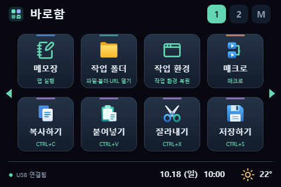

앱 실행
메일·브라우저·계산기 등 자주 쓰는 앱을 찾지 않고 바로 여세요.
DeskDeck의 새 이름, 바로함입니다. 기존 설정과 기기 연결은 그대로 이어집니다.
앱 실행부터 단축키, 반복 작업까지.
책상 위의 작은 화면을
나만의 PC 컨트롤 패널로 바꾸세요.
Windows 10 1809+ / 11 · x64 · 기간 제한 없음
개발 중인 무료 프로그램입니다. 사용 전 이용약관을 확인해 주세요. 이용약관 · 보증 및 책임 제한

Your buttons, your actions
Studio에서 버튼을 고르고 동작을 지정하세요. 이름과 아이콘, 페이지를 바꾸면 내 업무에 맞는 컨트롤 패널이 됩니다.
메일·브라우저·계산기 등 자주 쓰는 앱을 찾지 않고 바로 여세요.
복사·붙여넣기부터 앱 전용 단축키까지, 기억하기 어려운 키 조합을 버튼으로 만드세요.
업무 폴더, 자주 보는 문서, 웹사이트와 미디어 링크를 손 닿는 곳에 모으세요.
앱 실행·단축키·문자열 입력·대기를 순서대로 묶어 반복 작업을 줄이세요.
사용할 앱과 창 위치·크기를 저장하고, 버튼 하나로 익숙한 작업 배치를 준비하세요.
음악 재생과 음량을 조절하고, CPU·메모리 등 PC 상태를 버튼에서 확인하세요.
휴대폰·태블릿으로 포인터 이동, 클릭, 드래그와 스크롤까지. Wi-Fi 무선 연결과 USB 케이블 연결 모두 지원합니다.
“작업 환경 복원을 길게 누르기에 지정해 두면 좋아요. 출근 후 기기를 0.5초만 꾹 누르면 익숙한 창 배치로 업무를 시작할 수 있어요.”
“버튼 조합 매크로를 이용해 검색 홈페이지를 열고, 자주 찾는 단어를 한 번에 검색할 수 있어요.”
One studio, your screens
PC의 바로함 Studio에서 버튼을 설정하면, 선택한 화면에 표시됩니다. 세 가지 방법 중 편한 방식으로 시작하세요.
PC에 띄우는 별도 버튼 창입니다. 작은 터치 모니터나 보조 모니터를 컨트롤 패널처럼 사용하세요.
기기 없이 시작하기 →사용하지 않는 휴대폰에 새 역할을 주세요. Wi-Fi 무선 연결 또는 USB 케이블 연결을 사용할 수 있습니다.
휴대폰 연결하기 →JC3248W535를 책상 위 작은 패널로. Wi-Fi 무선 연결·USB 케이블 연결과 펌웨어 설치를 Studio에서 준비합니다.
보드 연결하기 →A second life for Android
서랍 속 공기계를 앱 실행과 단축키 버튼으로, 오래된 안드로이드 태블릿을 넓은 매크로 패드로 활용해 보세요. 제조사 업데이트 지원이 끝난 기기도 Android 5.0 이상이면 시작할 수 있습니다. 주요 작업은 PC의 Studio가 처리하고, 기기는 화면 표시와 터치 입력을 맡습니다.
Android 9
손안의 화면을 앱 실행과 단축키 패널로.
Android 5.0.2
넓은 화면에 자주 쓰는 버튼과 위젯을.
Android 5.0 이상 · 휴대폰과 태블릿에 같은 앱 사용 · USB 호환성은 기기에 따라 다를 수 있습니다.
Quick start
휴대폰이나 보드가 없어도 괜찮습니다. 가상창에서 먼저 사용해 보세요.
Windows 설치파일을 받고 약관과 통신 안내를 확인합니다. 화면 표시용 런타임이 없으면 설치 중 내려받습니다.
가상창을 켜거나, 기기 메뉴에서 Android 휴대폰 또는 ESP32 보드 연결 안내를 따라갑니다.
메모장 같은 간단한 앱을 버튼에 등록하고 ‘저장하고 보드에 적용’을 누릅니다. 가상창과 휴대폰에도 적용됩니다.
Before you begin
아닙니다. 가상 바로함 창만으로 시작할 수 있습니다. 마우스로 클릭하거나, 터치 모니터에 창을 놓고 직접 누르세요. 창 크기를 바꿔 보조 모니터를 활용할 수도 있습니다.
현재 공개 버전은 무료이며 기간 제한이나 자동 결제가 없습니다. 이미 받은 이 버전의 무료 사용권을 소급 유료화하지 않습니다.
Android 5.0 이상이 필요합니다. 같은 로컬 네트워크의 Wi-Fi로 시작하는 방법이 가장 간단합니다. USB 케이블 연결도 지원하지만 PC에 선택적 UsbDk 드라이버 설치가 필요할 수 있으며 기기별 호환성이 다를 수 있습니다. USB 디버깅은 일반 연결에 필요하지 않습니다.
Windows 런타임, Android 앱, ESP32 펌웨어 설치 도구에 더해 라이선스 조건을 지키기 위한 대응 소스와 재빌드 자료를 함께 제공합니다. 일반 사용에 별도 Python 설치는 필요하지 않습니다.
업무 환경 사용은 약관상 허용하지만 회사 보안 정책을 먼저 따라 주세요. 문자열 매크로는 암호화 저장되더라도 실행 시 대상 창에 실제로 입력됩니다. 비밀번호 관리자를 대신하는 보안 기능은 아닙니다.
이번 공개 설치파일은 Windows x64용입니다. macOS는 개발 중이며 이 페이지에서 배포하지 않습니다. iPhone 앱은 현재 제공하지 않습니다.
GitHub 이슈 또는 deskdeck.app@gmail.com으로 앱 버전, 연결 방법, 재현 순서, 오류 문구를 알려 주세요. 공개 이슈에 비밀번호, 기기 전체 백업, 개인 설정 파일을 올리지 마세요.
Ready when you are
바로함 Studio 0.9.40 · 공개 무료 평가판